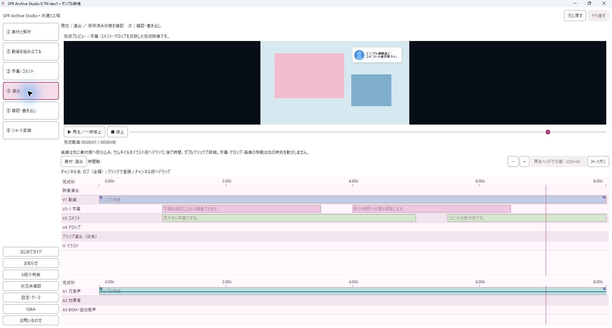

開発中の使い方ガイドです。②組み立て・③字幕コメント・④演出・⑥ショートには、架空素材で確認した実画面を掲載しています。①素材と解析・⑤書き出しは引き続き「仮イメージ」です。機能の区分と、実装・操作確認の完了は別です。
実画面：架空の確認用素材を使用しています。番号はこの画像の案内用です。写っているすべての機能が選択プランで利用可能という意味ではありません。
仮イメージ：実際のアプリ画面ではありません。配置・ボタン名・詳しい手順は実画面の確認後に差し替えます。

画面資料：開発版616の実画面（手動作成した架空字幕・架空コメント・無音のサンプル映像）。ASR結果・実聴・各プランの利用権限の検証を示すものではありません。実際の表示はアプリのバージョンにより異なる場合があります。未確認の機能には番号を表示していません。
Q&A · 紹介ページに戻る